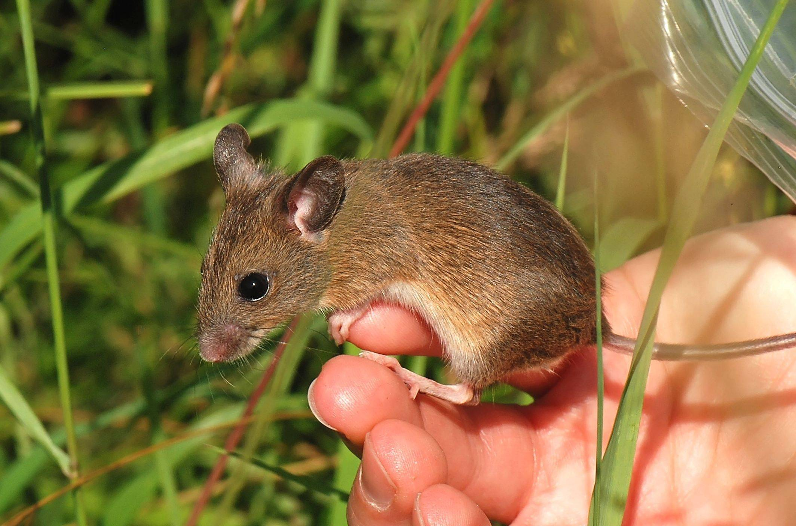

Мышь и мир
|  | День едва занимался, холодный и серый — очень холодный и серый, — когда человек свернул с тропы, проложенной по замерзшему Юкону, и стал подыматься на высокий берег, где едва заметная тропинка вела на восток сквозь густой ельник. Подъем был крутой, и, взобравшись наверх, он остановился перевести дух, а чтобы скрыть от самого себя эту слабость, деловито посмотрел на часы. Стрелки показывали девять. Солнца не было — ни намека на солнце в безоблачном небе, и поэтому, хотя день выдался ясный, все кругом казалось подернутым неуловимой дымкой, словно прозрачная мгла затемнила дневной свет. Но человека это не тревожило. Он привык к отсутствию солнца. Оно давно уже не показывалось, и человек знал, что пройдет еще несколько дней, прежде чем лучезарный диск на своем пути к югу подымется над горизонтом и мгновенно скроется из глаз. | читать в источнике |
| Человек посмотрел через плечо в ту сторону, откуда пришел. Юкон, раскинувшись на милю в ширину, лежал под трехфутовым слоем льда. А лед был прикрыт такою же толстой пеленой снега. Девственно белый покров ложился волнистыми складками в местах ледяных заторов. К югу и к северу, насколько хватал глаз, была сплошная белизна; только очень тонкая темная линия, обогнув поросший ельником остров, извиваясь, уходила на юг и, так же извиваясь, уходила на север, где исчезала за другим поросшим ельником островом. Это была тропа, снежная тропа, проложенная по Юкону, которая тянулась на пятьсот миль к югу до Чилкутского перевала, Дайи и Соленой Воды, и на семьдесят миль к северу до Доусона, и еще на тысячу миль дальше до Нулато и до Сент-Майкла на Беринговом море — полторы тысячи миль снежного пути. | |
|
| Но все это — таинственная, уходящая в бесконечную даль снежная тропа, чистое небо без солнца, трескучий мороз, необычайный и зловещий колорит пейзажа — не пугало человека. Не потому, что он к этому привык. Он был чечако, новичок в этой стране, и проводил здесь первую зиму. Просто он, на свою беду, не обладал воображением. Он зорко видел и быстро схватывал явления жизни, но только явления, а не их внутренний смысл. Пятьдесят градусов ниже нуля означало восемьдесят с лишним градусов мороза. Такой факт говорил ему, что в пути будет очень холодно и трудно, и больше ничего. Он не задумывался ни над своей уязвимостью, ни над уязвимостью человека вообще, способного жить только в узких температурных границах, и не пускался в догадки о возможном бессмертии или о месте человека во вселенной. Пятьдесят градусов ниже нуля предвещали жестокий холод, от которого нужно оградиться рукавицами, наушниками, мокасинами и толстыми носками. Пятьдесят градусов ниже нуля были для него просто пятьдесят градусов ниже нуля. Мысль о том, что это может означать нечто большее, никогда не приходила ему в голову. |
анти мышь